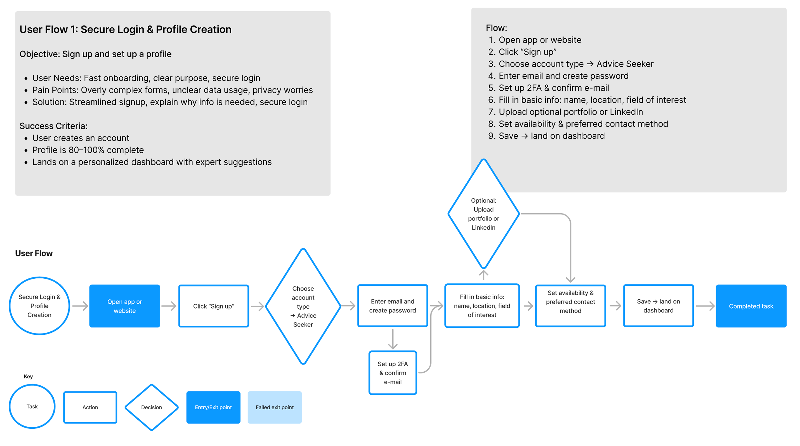

User Flow: Onboarding
Streamlined signup with account type selection, 2FA, profile basics, and dashboard landing.
A responsive web app where users connect instantly with professionals (designers, pilots, etc.) for pay-per-session advice. Focus: trust, speed, and clear flows.
Streamlined signup with account type selection, 2FA, profile basics, and dashboard landing.
Review prompt, session summary, rating + written feedback, rebook or next actions.

Filters, profile review, select date/time + notes, payment, and calendar confirmation.

Added motion + motivational microcopy to reduce perceived wait time.
Early layout exploration focused on clarity and task flow.
Improved hierarchy, spacing, and component consistency.
Polished UI with calmer visuals and more confident CTAs.
Validated navigation clarity and refined key screens based on findings.
Used peer review to tighten consistency and improve scanability.
Grouped insights into themes to steer features and priorities.
Advice seeker persona to anchor decisions around needs and context.
Career switcher persona to emphasize clarity, reassurance, and trust signals.